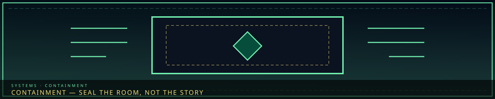
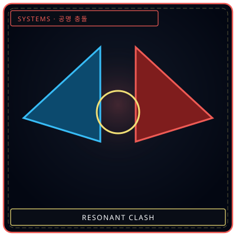

/// RAPID JUMP:
STATUS: ARCHIVE VERIFIED |
CLEARANCE: LEVEL-4 OVERSIGHT |
PROTOCOL: REVERIE DIRECTORATE
ARTICLE
DISCUSSION
SOURCE
HISTORY
YEAR 4,238 · DAWN OF HOPE
SYSTEMS & MECHANICS RECORD
Containment Procedures & Breach Suppression
Contents
“Every Sorrow Entity has a breach. The room is the second lock.”

 HoldWill as a wall
HoldWill as a wall
SuppressionWhen the seal failsBreach Mechanics — The Sorrow Gauge
The Sorrow Gauge (한 게이지 — Han Geiji)
"Every Sorrow Entity has a breaking point. The Sorrow Gauge tells you how close you are."
What it is: A measurement system that tracks the accumulated sorrow pressure within a Sorrow Entity's containment zone. As the entity's sorrow builds — through neglect, mistreatment, or natural accumulation — the gauge fills. When it reaches critical mass, the entity breaches.
How it works:
- Each contained Sorrow Entity has a Sorrow Gauge — visible to R.D. personnel
- The gauge fills based on:
- Time without work — the longer an entity is left alone, the more its sorrow accumulates
- Wrong Work Type — using an ineffective Work Type increases sorrow faster
- External Han events — Han overflow, Fracture events, or Dream disturbances can spike the gauge
- Entity-specific triggers — some entities have unique conditions that fill their gauge
- The gauge decreases when:
- Correct Work Type is used — effective work drains sorrow
- Containment is reinforced — Architect-shored barriers reduce accumulation
- Echoes are fed to the entity — providing a "release valve" for stored sorrow
- Core Suppression is performed — resets the gauge to zero
Gauge Levels:
| Level | Range | Status | Color |
|---|---|---|---|
| Stable | 0–25% | Normal operation | Green |
| Elevated | 26–50% | Increased monitoring | Yellow |
| Critical | 51–75% | Breach imminent — prepare response | Orange |
| Breach | 76–100% | BREACH — entity escapes/transforms/corrupts | Red |
Breach Types
Not all breaches are the same. The type of breach depends on the entity's Sorrow Category and Manifestation Type.
Type 1: Escape (탈출 — Talchul)
What happens: The entity breaks free from containment and rampages through the facility.
Which entities:
- Entities with Subject manifestation (beings)
- Entities with Body or Phantasmal form
- Entities with high Coherence (Level IV-V)
Consequences:
- The entity moves through the facility — attacking personnel, damaging structures, spreading Han
- Other entities may be triggered — cascading breaches
- The facility enters Lockdown — all personnel to stations, barriers activated
- The Wardens are called — containment squads deploy
How to resolve:
- Suppress — force the entity back into containment through Pugnahan (confrontation)
- Appease — use Flerehan (empathy) to calm the entity and guide it back
- Destroy — if the entity cannot be contained, it must be destroyed (last resort)
Type 2: Transform (변형 — Byeonghyeong)
What happens: The entity evolves within containment — becoming more powerful, more coherent, or more dangerous.
Which entities:
- Entities with Object or Place manifestation
- Entities with Transformation Chain potential
- Entities approaching the next Coherence Level
Consequences:
- The entity's risk level increases — α → β → γ → δ → ω
- New abilities manifest — the entity becomes harder to work with
- Containment requirements change — new barriers, new Work Types, new protocols
- The entity may become sentient — gaining the ability to communicate, deceive, or manipulate
How to resolve:
- Adapt — adjust Work Types and containment to match the new form
- Suppress — use Core Suppression-level intervention to force the entity back
- Extract — perform emergency M.A.W. extraction before the transformation completes
Type 3: Corrupt (부패 — Bupae)
What happens: The containment zone itself becomes dangerous — Han leaks, reality distorts, the facility around the zone warps.
Which entities:
- Entities with Place manifestation
- Entities with Void or Weight element
- Entities with high Potency (γ-ω)
Consequences:
- The containment zone becomes a Fracture Zone — reality breaks down
- Han leaks into surrounding areas — affecting personnel, other entities, the facility
- The zone's walls become alive — pulsing, whispering, growing
- Personnel near the zone experience emotional bleed — feeling the entity's sorrow
- The zone may expand — consuming adjacent rooms, corridors, sectors
How to resolve:
- Purge — use Ferrehan (endurance) to absorb the leaked Han
- Seal — Architect-shore the zone's boundaries to prevent expansion
- Evacuate — abandon the zone if it cannot be contained
Breach Response Protocol
When a breach occurs, the R.D. follows a four-stage response:
| Stage | Name | Action | Who |
|---|---|---|---|
| 1 | Alert | All personnel notified. Nearby stations prepare. | The Secretary |
| 2 | Assess | Echo-Core determines breach type and severity. | Relevant Echo-Core |
| 3 | Respond | Containment teams deploy. Work Types applied. | Echo-Core + team |
| 4 | Resolve | Entity suppressed, transformed, or destroyed. Zone repaired. | All hands |
The Director's role during breach:
- The Director does not deploy — the Director is too important to risk
- The Director monitors from the Central Hub — feeling the facility's response through the Alpha Tree connection
- The Director makes the final call on destruction — if an entity cannot be contained, the Director authorizes its elimination
- The Director absorbs the aftermath — the sorrow released by the breach is channeled into the Director through the M.A.W. fusion
Breach Statistics (Historical)
| Breach Type | Frequency | Average Severity | Average Resolution Time |
|---|---|---|---|
| Escape | 40% | High | 2-6 hours |
| Transform | 35% | Medium | 1-3 days |
| Corrupt | 25% | Extreme | 1-2 weeks |
Notable Breaches:
| Date | Entity | Type | Severity | Outcome |
|---|---|---|---|---|
| Year 4301 | C-IVδ-001 [LO] The Orphaned Bell | Escape | High | Suppressed by The Containment Lead |
| Year 4567 | C-Vδ-002 [WS] The Grieving Colossus | Transform | Extreme | Entity grew larger — now permanently wanders Zone D |
| Year 4892 | C-IVω-001 [GP] The Maw | Corrupt | Catastrophic | Zone B perimeter expanded — 3 sectors consumed |
| Year 5234 | C-IIIγ-021 [LS] The Hollow Choir | Escape | Medium | Appeased by The Secretary using Flerehan |
| Year 5789 | N-IVβ-019 [WS] The Inherited Debt | Transform | High | Entity gained sentience — now communicates |
Sector Designation — The Containment System
Sector Designation — The Containment System
Purpose: To contain, study, and extract M.A.W. from Sorrow Entities.
Designation Format: SECTOR-[Zone]-[Number]
Examples:
SECTOR-B-01— First containment sector in Zone BSECTOR-D-03— Third containment sector in Zone DSECTOR-A-01— Primary containment facility in Zone A (the most dangerous entities)
Sector Locations
| Sector | Zone | Location | Purpose | Security |
|---|---|---|---|---|
SECTOR-A-01 | A | Underground, beneath the Alpha Tree | Primary containment — highest-risk entities | Maximum |
SECTOR-B-01 | B | The Maw perimeter | Study of the Cheongula — the First Sorrow | Extreme (uncontained) |
SECTOR-B-02 | B | The Old Lament | Containment of Zone B's older entities | High |
SECTOR-C-01 | C | The Collector's Row | Debt-related entities — used by Collectors | High |
SECTOR-D-01 | D | The Forge District | M.A.W. extraction and processing | Moderate |
SECTOR-D-02 | D | The Echo Gardens | Memory-related entities — study only | Moderate |
SECTOR-E-01 | E | The Threshold | Border entities — wilderness incursions | High |
Sector Hierarchy
`
Facility Director (reports to Council)
│
├── Containment Division
│ └── Guards, barriers, entity management
│
├── Research Division
│ └── Study, resonance, M.A.W. extraction
│
├── Extraction Division
│ └── M.A.W. production, bonding, distribution
│
└── Support Division
└── Medical, maintenance, logistics
`
The M.A.W. Registry
All extracted M.A.W. is catalogued in the M.A.W. Registry — a database maintained by the facility.
Registry format:
`
M.A.W.-[Grade]-[Type]-[Number]
Source Entity: [Designation]
Bonded User: [Name/ID]
Extraction Date: [Date]
Resonance Compatibility: [Percentage]
Status: [Active/Dormant/Destroyed/Returned]
`
Examples:
The City's Response
The City's Response
Somnarak is alive — it responds to what happens within.
- Han accumulation: Buildings shift, streets change, landmarks form
- Han flow: Moves like blood through veins. Alpha Tree is the heart. Blocking creates pressure — risk of eruption.
- The paradox: The city needs sorrow to survive, but too much destroys it. This is why the Council says: "We manage."
CANONICAL RECORD: Sourced directly from the official Project Somnarak Worldbuilding Codex.
CANONICAL CROSS-LINKS & ATLAS CONNECTIONS